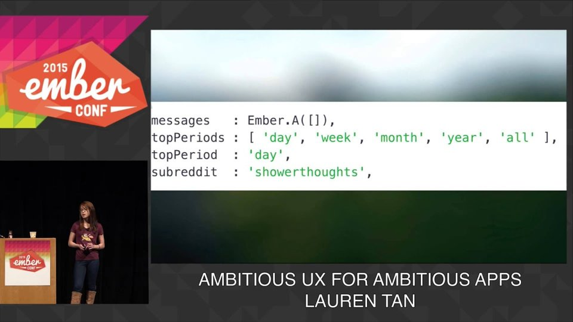

2015 · EmberConf
给有野心的应用设计用户体验
Ambitious UX for Ambitious Apps

演讲精读
界面正在加载时，用户怎样知道刚才那一下点击生效了？Lauren 用提示服务和短暂出现的消息演示同一个设计问题。服务保存状态，组件负责呈现，一条消息还能在合适的时间消失。把这些例子放在一起看，会发现一个可以复用的组件，也能让应用在每次等待时都更好理解。
2015 · EmberConf
Ambitious UX for Ambitious Apps

界面正在加载时，用户怎样知道刚才那一下点击生效了？Lauren 用提示服务和短暂出现的消息演示同一个设计问题。服务保存状态，组件负责呈现，一条消息还能在合适的时间消失。把这些例子放在一起看，会发现一个可以复用的组件，也能让应用在每次等待时都更好理解。